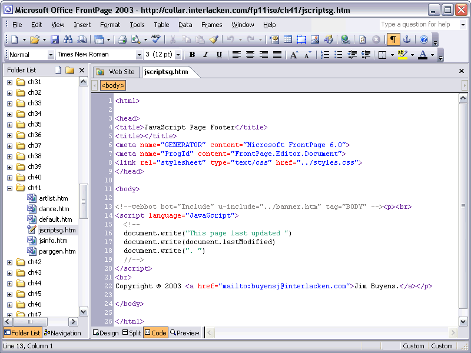

Introduction to Modern JavaScript
by Steven Hunt
Presented by
Space Coast JS

Meeting space provided by
TrepHub

Welcome!
First off, welcome to our very first user group meeting!
About Space Coast JS
Space Coast JS is a community of software developers interested in discussing JavaScript-based technologies. We present information on a wide range of JavaScript-related topics at our meetings such as Node.js, development tools, best practices, etc.
About Steven

I’m a software developer specializing in JavaScript, C#, and database systems. I’ve worked on everything from cutting-edge Node.js apps to NASA mainframes.
Before we talk about "Modern" JavaScript...
Let's talk about "Classic" JavaScript.

Just because you can, doesn't mean that you should.
An Overview
- Code is added inline to HTML with the
<script>tag. - Events are attached to controls by embedding JS code into HTML attributes. Example:
<input type="button" onclick="doSomething();"> - Functions are typically defined in the global context.
- JavaScript is generally regarded as a toy language.
What's so bad about that?

Well...
- The UI and the code are tightly coupled.
- Naming conflicts and unintended overriding are likely in the global context.
- The code is difficult to maintain and debug.
- Automated testing and validation is difficult.
...There's a better way, right?
(Relax, nobody is bringing FrontPage back...)
Introducing Modern JS!
- Better libraries and frameworks.
- Better tools.
- More environments for JS to run in.
- A large and active community of developers.
Libraries and Frameworks
Module Systems and Loaders
Until ES6 is released, JavaScript doesn't have a built-in module system. In the mean time, you can choose your own.
Editors
- JetBrains WebStorm (Paid)
- SublimeText (Paid)
- Atom (Free)
- Brackets (Free)
- Aptana (Free)
- Free Online Editors (JSFiddle, Codepen, JSBin)
- ...really any text editor you want!
Don't forget about the classics!

Linters
Provides syntax validation and enforces coding guidelines and best practices. Useful for catching syntax errors before runtime.
- JSLint: The original JS linter.
- JSHint: Based on JSLint, more configurable.
- ESLint: A modular JS linting utility.
- JSCS: JavaScript coding style validator.
- CoffeeLint: A linter for CoffeeScript.
Build Systems
Used to execute steps required to validate, compile, and package your application.
- Cake: A simple build system for CoffeeScript.
- Grunt: A popular build system which uses JS for the build file.
- Gulp: A new and fancy build system based on streaming pipes.
- Brunch: A scaffolding and build tool that is pre-configured.
- Broccoli: An even newer and fancier build system based on even fancier streams/pipes/fibers/whatever.
Transpilers
A Transpiler, or source-to-source compiler, allows code to be converted into another source language such as JavaScript.
- Traceur: ECMAScript 6 (Harmony)
- CoffeeScript: A Ruby-like language.
- TypeScript: ES6 + type safety.
- Dart: a class-based object, oriented language by Google.
Debugging Tools
- Native (Chrome, Firefox, IE, Opera, Safari)
- Spy js for WebStorm
- Theseus
- Sublime Web Inspector
- Node-Inspector (for Node.js)
Testing
Automated unit and integration testing for server-side and client-side environments.
Node.js
JS on your server!
- Created in 2009 at Joyent using Google's V8 engine.
- All requests execute on a single thread, with all IO being asynchronous and evented (I.E. callbacks).
- Support for command-line programs to be written in JavaScript. Many of the JS development tools are written in this way.
- Ships with the package manager NPM.
- Write your server-side code in the same language as your client-side code!
Package Managers
Now that we have so many awesome libaries, how do we manage all of those third-part assets?
Conclusion
- JavaScript is a real language, so treat it like one.
- Use JS tools and best practices in your projects.
- Go forth and do awesome things!
Thanks for coming!
Questions?
Comments?